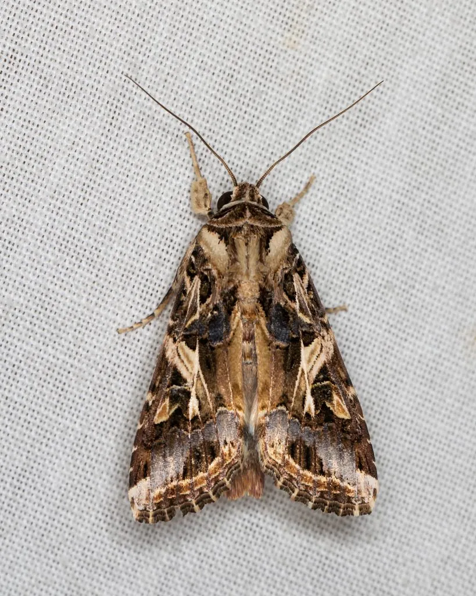

昆虫 · 动物界
斜纹夜蛾 Spodoptera litura

食性极广的农业害虫，幼虫体侧有斜纹，暴食叶片和果实，迁飞能力强，是亚洲农作物的重要防治对象。
- 分类
- 门节肢动物门纲昆虫纲目鳞翅目科夜蛾科属灰翅夜蛾属
- 栖息环境
- 农田、菜地、果园与荒地，寄主植物种类繁多
- 地理分布
- 亚洲、欧洲和非洲的温暖地区，中国南方常见
- 保护级别
- 暂无评估；重要农业害虫
物种志
斜纹夜蛾成虫翅展约 3.5–4.5 cm，前翅褐色，有复杂的斜向斑纹和一条白色斜带，后翅白色带褐色边缘。幼虫体色变化大，从绿色、褐色到黑色都有，体侧有一条明显的斜纹，因此得名，老熟幼虫体长约 4–5 cm。
它食性极广，可取食蔬菜、棉花、烟草、花生、甘薯等上百种植物，幼虫白天躲在土缝或叶背，夜间出来暴食叶片和果实，严重时把叶片吃光。成虫有较强的迁飞能力，可随风飞行数百千米，在南方一年发生多代，没有滞育现象。斜纹夜蛾分布于亚洲、欧洲和非洲的温暖地区，是重要的农业害虫，防治以监测预警、性诱剂、生物农药和科学用药为主，幼虫低龄期是用药的关键时期。
形态与习性
- 食性幼虫取食蔬菜、棉花、烟草等上百种植物
- 翅展成虫约 3.5–4.5 cm，老熟幼虫约 4–5 cm
- 识别幼虫体侧有一条明显的斜纹
- 习性幼虫白天躲藏、夜间暴食，成虫能远距离迁飞
- 防治监测预警、性诱剂、生物农药和科学用药
趣味知识
- 斜纹夜蛾幼虫体侧有一条斜纹，名字由此而来。
- 它的食性极广，能取食上百种农作物和野生植物。
- 幼虫喜欢在夜间暴食叶片，白天躲在土缝和叶背。